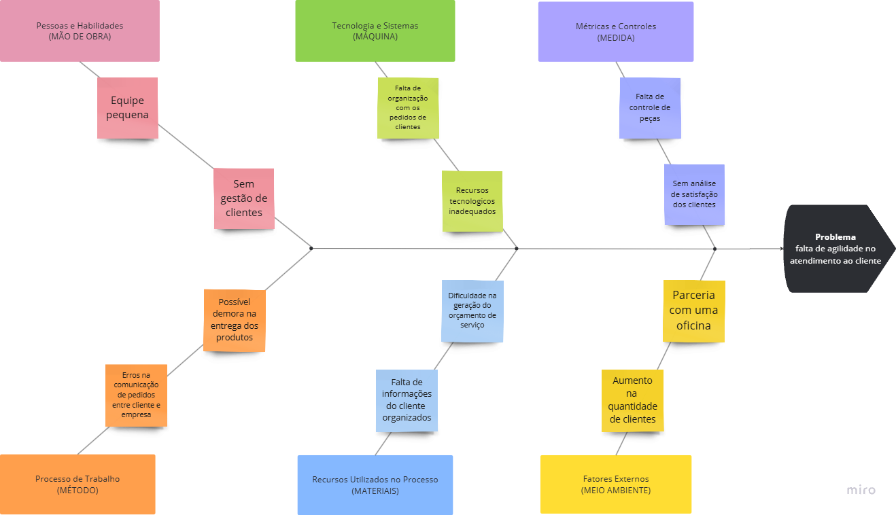

Cenário Atual
Introdução ao Negócio e Contexto
A Pro Injeção é uma empresa do setor automotivo, especializada em serviços eletrônicos e elétricos para veículos. Desde sua fundação, a Pro Injeção dedica-se a solucionar problemas que impactam o funcionamento dos automóveis, como a programação e o reparo de módulos de injeção eletrônica (ECU), manutenção de paineis, programação de chaves e ajustes em componentes elétricos que podem impedir o funcionamento ideal do veículo.
Com foco em atender motoristas e proprietários de oficinas que buscam serviços precisos e confiáveis, a Pro Injeção oferece soluções técnicas avançadas para garantir a performance dos sistemas eletrônicos dos veículos. Sua clientela inclui tanto indivíduos que desejam aplicar melhorias ou corrigir eventuais falhas, quanto empresas de manutenção automotiva que demandam expertise em tecnologia e diagnóstico.
A missão da Pro Injeção é contribuir para a segurança e o desempenho dos veículos, trazendo inovação e confiabilidade para o mercado de serviços automotivos. Nos últimos anos, a empresa tem observado uma crescente demanda por serviços de reparo eletrônico.
Identificação da Oportunidade ou Problema
O principal problema identificado na Pro Injeção foi a falta de agilidade no atendimento ao cliente. Ao passo que, seu processo de atendimento depende de muitas informações e características do veículo do proprietário, como marca e modelo, ano de fabricação do veículo, entre outros, essas que não estão sendo organizadas e gerenciadas de maneira adequada.
A fim de entender melhor o motivo deste problema será necessário entender:
-
Mão de Obra
- A equipe da empresa é formada por apenas uma pessoa;
- Em conversas realizadas com o cliente foi identificado que não há uma devida gestão de organização de clientes, serviços ou peças;
-
Máquina
- Todo o gerenciamento que acontece com os serviços ou clientes é retirado de ferramentas como o whatsapp, dessa forma dificultando o seu acesso e gestão dos pedidos;
-
Medida
- Como não há uma ferramenta centralizada de informações o controle de peças fica comprometido, dessa forma não há uma maneira fácil e rápida de verificar se a peça está no estoque;
- Ainda não há nenhuma forma do cliente classificar a qualidade do atendimento;
-
Método
- Pela falta de gestão das peças e dos clientes a entrega do produto pode estar sujeita a erros e falhas;
-
Materiais
- Cada serviço que a Pro Injeção está fazendo não está sendo registrado e organizado, dessa forma pode haver falhas na comunicação do cliente e uma maior dificuldade de orçamento do serviço prestado;
-
Meio Ambiente
- Nos últimos meses esta empresa conseguiu aumentar a quantidade de clientes devido a parceria com outras oficinas que estão direcionando seus clientes para a Pro Injeção
A Figura, a seguir apresenta o diagrama de Ishikawa contendo as causas (organizados pelos 6M’s) e o problema da Pro Injeção.

Desafios do Projeto
O desenvolvimento de um sistema de gestão para a Pro Injeção apresenta alguns desafios que precisam ser considerados para garantir uma solução eficaz e adequada às necessidades da empresa. Esses desafios incluem:
-
Definição e Priorização das Funcionalidades: É essencial identificar e priorizar as funcionalidades críticas para atender às necessidades da Pro Injeção, como a criação de orçamentos, controle de ordens de serviço e cadastro de clientes e produtos. Um desafio importante será equilibrar funcionalidades essenciais com recursos adicionais sem comprometer a facilidade de adicionar informações e acessá-las, assim como a abordagem utilizada pelo dono do negócio.
-
Facilidade de Uso para Equipes Não Técnicas: Considerando que o sistema será utilizado por pessoas com diferentes graus de conhecimento em tecnologia, é essencial que o software seja simples de compreender e utilizar. Um dos desafios será desenvolver uma interface amigável que permita que todos os usuários da empresa o utilizem sem a necessidade de treinamento intensivo.
-
Manutenção e Suporte Técnico: A sustentabilidade do projeto dependerá da capacidade de manter e atualizar o sistema para lidar com eventuais bugs, melhorias e mudanças nas necessidades do negócio. É importante planejar para uma manutenção contínua e garantir suporte técnico, especialmente durante a fase inicial após a implementação.
-
Garantia de Segurança e Privacidade dos Dados: Como o sistema irá armazenar dados confidenciais dos clientes e informações financeiras, um dos principais desafios será assegurar que o sistema esteja em conformidade com as melhores práticas de segurança seguindo a LGPD, protegendo as informações contra acessos não autorizados e garantindo a privacidade dos dados.
-
Escalabilidade para Suportar o Crescimento Futuro: Como a empresa é nova no mercado e está em fase de crescimento, é necessário que o sistema seja escalável para suportar um número maior de clientes, ordens de serviço e produtos à medida que o negócio se expande. A arquitetura do sistema deve ser flexível e preparada para adaptações futuras sem comprometer o desempenho.
Esses desafios refletem as complexidades do projeto e destacam a importância de um planejamento cuidadoso, com foco em um desenvolvimento que seja robusto, escalável e acessível, promovendo uma transição suave para o novo sistema e maximizando seu impacto positivo para a Pro Injeção.
Segmentação de Cliente
A Pro Injeção atende principalmente motoristas e proprietários de veículos que buscam serviços especializados em eletrônica e elétrica automotiva. A segmentação de clientes pode ser dividida nos seguintes grupos:
-
Motoristas Individuais com Veículos Pessoais: Esse segmento inclui proprietários de veículos que buscam serviços de manutenção e reparo para garantir a segurança e o desempenho de seus automóveis. Esse público é composto por motoristas de diferentes idades, mas geralmente entre 25 e 55 anos, que possuem veículos de uso pessoal e procuram um atendimento confiável e eficiente para resolver problemas eletrônicos e elétricos. Suas principais necessidades incluem a confiabilidade nos serviços e um custo-benefício adequado.
-
Empresas de Manutenção Automotiva e Oficinas: A Pro Injeção também atende oficinas e empresas do setor automotivo que precisam de suporte especializado para serviços que envolvem sistemas eletrônicos complexos. Essas empresas frequentemente terceirizam esses serviços para especialistas em eletrônica automotiva, especialmente para programação de módulos (ECU), ajustes em painéis e configuração de componentes eletrônicos. Esse segmento valoriza agilidade, precisão e qualidade nos serviços para complementar suas operações.
| Versão | Descrição | Autor | Data |
|---|---|---|---|
| 0.1 | Primeira ideia do projeto | Bruno Bragança, Fábio Torres, Paulo Filho, Pedro Braga, Vinicius Vieira | 07/11/2024 |
| 0.2 | Atualizando o projeto com os feedbacks enviados pelo professor | Bruno Bragança, Fábio Torres, Paulo Filho, Pedro Braga, Vinicius Vieira | 08/11/2024 |